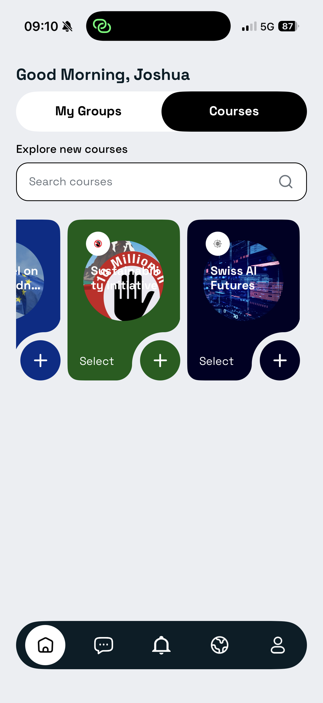
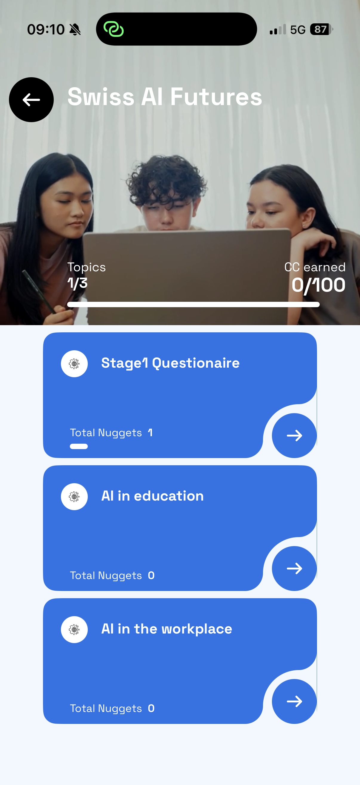
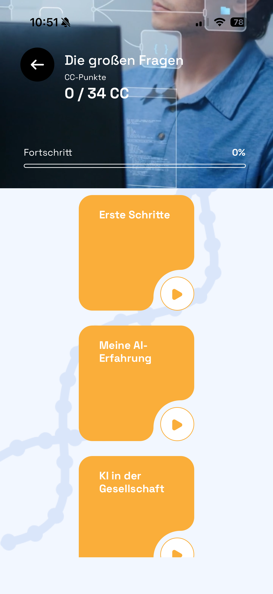
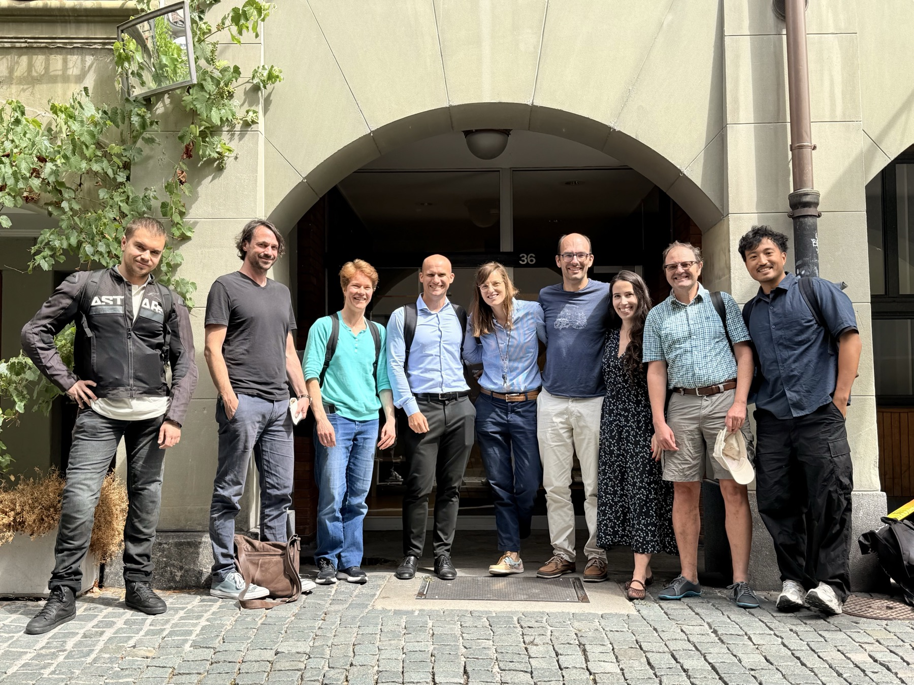

Likely venue: ETH Zurich. Exact room to be confirmed.
Citizen workshops
Swiss AI
Futures
Citizen
Workshops
Workshop dates
Likely venue: UNIL. Exact room to be confirmed.
Share your view on how AI is affecting work and education in Switzerland. No AI expertise is needed.
To receive CHF 60, complete all three steps
- Sign up for one workshop.
- Finish the Atgora app questionnaire on your phone.
- Attend one workshop in Zürich or Lausanne.
Why it matters
Help shape Switzerland's AI future
Online contributions surface fears, hopes, and questions that might otherwise stay scattered.
In-person groups then work through those themes carefully, refine them, and help turn them into something policy-makers can actually use.
The final TA-SWISS report will inform the Swiss Parliament and the national conversation around AI policy, work, and education.
Step 1
Sign up for the study
Use the form to choose one session and indicate your preferred workshop language. You will receive confirmation after signing up.
Step 2
Download Atgora and finish the module
Install Atgora, open Swiss AI Futures, and complete the module before your workshop. It takes about 30 minutes in the app. Please finish it no later than the day before your workshop.






Step 3
Attend one workshop
Come to the session you registered for. The workshop is also an experiment testing an AI tool that can help groups deliberate.
Zürich
Tuesday, August 11, 5:30-7:30 pm. Likely venue: ETH Zurich. Exact address sent by email.
Lausanne
Wednesday, August 12, 5:30-7:30 pm. Likely venue: UNIL. Exact address sent by email.
Before attending
Finish the Atgora module first.
What happens there
You will take part in a structured discussion. Part of the workshop tests an AI-supported deliberation tool, and part uses human moderation. Audio recording and live transcription are part of the workshop format.
Q&A
Good to know
Who can take part?
People living in Switzerland who are 18 or older and can attend one workshop in Zürich or Lausanne.
Do I need AI expertise?
No. The workshop is designed for people with different backgrounds and everyday perspectives.
What do I need to complete?
To participate and receive CHF 60, sign up for one workshop, finish the Swiss AI Futures module in Atgora before attending, and attend the in-person workshop.
Can I attend more than one session?
No. Please register for only one Swiss AI Futures workshop.
What happens after I sign up?
You will receive confirmation after signing up. The exact workshop address will be sent by email before the event.
Can I download flyers and social images?
Yes. You can download public sharing materials for the Swiss AI Futures Citizen Workshops.
Flyer PDFs Flyer and social images
The packages include English, German, and French versions in both the funky and editorial styles.
What is the study about?
The study asks people in Switzerland to share their views on how AI is affecting education, work, public services, and everyday life.
The goal is to understand where people agree, where they disagree, and what tradeoffs deserve closer public discussion.
What happens in Atgora?
In the Atgora module, you answer survey questions, vote on short statements, and may share short written arguments. The module takes about 30 minutes.
Please finish the module no later than the day before your workshop. The online module is required before the workshop, but it is not separately compensated on its own.
What happens in the workshop?
The in-person workshop lasts about two hours. Participants discuss AI in education and AI in work and labour markets.
One discussion uses AI-supported spoken deliberation, and one discussion uses human-moderated spoken deliberation.
How is AI used?
The AI system helps organise the conversation. It may capture arguments, turn them into short statements for group validation, map areas of agreement and disagreement, and return provisional summaries for participants to check.
The AI does not decide what participants should think. It does not make final recommendations, rank participants, profile individuals, track people outside the app, or generate personalised persuasive content.
All AI-supported outputs are provisional and must be reviewed, corrected, accepted, or rejected by participants.
What data is collected?
The study may collect survey responses, in-app voting choices, submitted arguments, app completion information, workshop interest or location preference, and, for workshop participants, validation responses and transcripts of spoken discussion.
Contact details such as name and email are used only for study communication, workshop invitations, and payment or voucher administration where applicable.
Identifying information is stored separately from research data. Research data is coded or pseudonymised and later anonymised where possible.
What about audio recording and transcription?
Because the workshop involves spoken discussion, participants must be comfortable with possible audio recording, automated transcription, and research processing of verbal contributions.
Audio recordings are used only for this study. Transcription may be carried out using Gladia, an AI-based speech-to-text service, under a data processing agreement.
Speaker labels in transcripts use participant codes rather than names. Raw audio is permanently deleted within 30 days after transcript verification. Pseudonymised or de-identified transcripts are kept under restricted access and are not openly published.
Participants who do not consent to possible audio recording and transcription cannot take part in the in-person workshop.
Is participation voluntary?
Yes. You may pause, skip questions, stop using the app, step out of a workshop, or withdraw from the study at any time without giving a reason and without disadvantage.
If you withdraw, identifiable data will be deleted where feasible. Fully anonymised data that has already been included in aggregate analysis may no longer be removable.
Are there risks or support options?
This study involves minimal risk. Some questions about AI, education, work, employment, or social change may feel complex or sensitive.
In the workshops, a support person and quiet space will be available. Participants may pause or step out at any time.
Please avoid sharing names, contact details, or identifying personal information about yourself or other people in written responses or workshop discussion.
Who is involved?
Swiss AI Futures is funded by TA-SWISS and run by a project team with researchers affiliated with several universities.
Study contact: Joshua C. Yang, joyang@ethz.ch. Principal investigators include Prof. Maud Reveilhac and Prof. Aurelia Tamò-Larrieux.
The project team includes Gerold Schneider, Simon Mayer, Martial Pasquier, Bohdan Trembovelskyi, Vlada Druta, and Nisha Yadav.
The Atgora app is provided by the @gora Foundation / Carbon Copy as a technology partner.
ETH Zurich controls the research data. The technology partner may process app data only for implementation, security, and technical support under a project-specific agreement and data processing agreement.
TA-SWISS does not receive individual participant data and has no editorial control over the research.
Who can I contact?
For questions about the study, contact Joshua C. Yang at joyang@ethz.ch.
For complaints about participation in the study, contact the ETH Zurich Ethics Committee Secretariat at ethics@sl.ethz.ch or +41 44 632 85 72.
Project team
Who is running this?

TA-SWISS project
TA-SWISS funds Swiss AI Futures as a public discussion project on the future of AI in Switzerland.
Study contact
Principal investigators
Maud Reveilhac and Aurelia Tamò-Larrieux.
Project team
Gerold Schneider, Simon Mayer, Martial Pasquier, Bohdan Trembovelskyi, Vlada Druta, and Nisha Yadav.
Technology partner
Atgora is the technology partner and app provider for the online module.
Data and independence
ETH Zurich controls the research data. TA-SWISS does not receive individual participant data and has no editorial control over the research.
Ethics
Approved without reservations. Project 26 ETHICS-116.